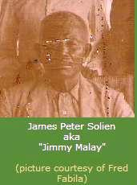
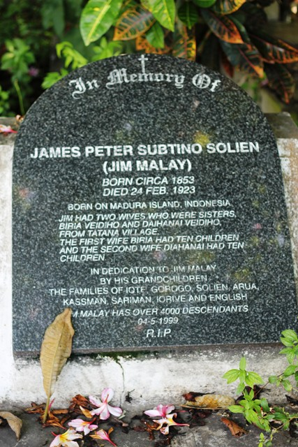
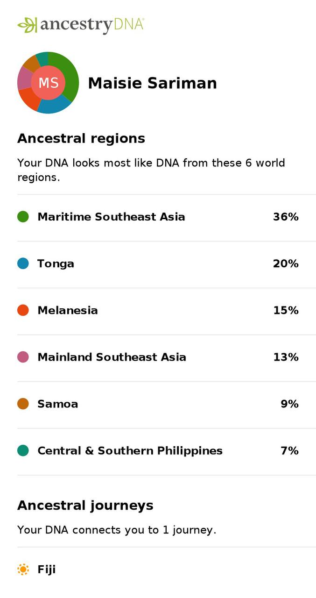

For the Solien Besena — the hundreds of descendants of one remarkable man, scattered from Tatana Island to Brisbane, from the Gulf of Papua to the jazz stages of Melbourne. This is your story. It belongs to all of you.
And for Jimmy Malay himself — who came as a foreigner, married into the land, raised twenty children, and never went home. But he made a home so enduring that his name is still a clan, still a family, still a living culture, more than a century after his death.
The Patriarch — Jimmy Malay
James Peter Subtino Solien, c.1853 – 24 February 1923

Photo courtesy of Fred Fabila, via solienfamily.com
There is no surviving physical description of Jimmy Malay in any known source. Archduke Franz Ferdinand of Austria, who spent a day with him in 1893 and who described the skin tones and builds of nearly everyone else he met in New Guinea, said nothing about what Jimmy looked like. He called him only “a local Malay trader.” The colonial officers who praised him, the missionaries who operated on him, the newspapermen who gossiped about his gold discoveries — none of them bothered to describe him. He was simply “Jimmy Malay,” and everyone in Port Moresby knew what that meant.
What we know is this: he had one hand. He had lost the other in 1883, and for the remaining forty years of his life he sailed boats, fired guns, climbed mountains, traded across hundreds of miles of coastline, and hosted legendary parties — all with a single hand. His Asian features, whatever exactly they were, ran deep in the blood. Four and five generations later, his descendants still carry them. As the CloudPNG blog noted: “What striking to this day after four or five generations is that his Asian features continue to flow along the bloodline.”
Character
Everyone who wrote about Jimmy Malay liked him. Administrator William MacGregor — the most powerful man in British New Guinea — praised him as:
“A man of integrity and of remarkable ability and courage.”— BNGAR, 1897–1898
“Toaguba,” writing in the Pacific Islands Monthly in 1959, remembered him with warmth:
“My memories of my very good friend Jimmy are pungent. He was a much-loved man. In my day he had an open bungalow on one of the numerous tidal streams which feed into the sea via Galley Reach … no matter at what hour you arrived at the house he was always pleased to see you. And there was always plenty of home-brewed ‘cratur’ available, despite the fact that he did not drink or smoke himself, being a strict Mahommedan. He was an excellent cook and would prepare a first-class meal.”— “Toaguba” (B.A. McLachlan), Pacific Islands Monthly, January 1959
Walter Gors, the Burns Philp trader who knew him best, said simply: “Everyone liked Jimmy. In my long experience, he was the best trader I ever knew — he could buy and sell anything.”
The Hand (1883)
In 1883, Jimmy Malay’s gun exploded. The London Missionary Society missionaries William and Fanny Lawes performed makeshift surgery — an amputation, almost certainly, in a mission house with no anaesthetic and no proper surgical instruments. During the operation, Jimmy “never uttered a sound” (Lawes, 1883).
The loss barely slowed him down. “Toaguba” wrote that “although he had only one hand, he could handle a boat with ease.” For forty years, the one-handed man outworked, outtraded, and outlasted most of the two-handed Europeans around him.
The Trading Empire
Jimmy traded in everything the region produced: bêche-de-mer, shells, sandalwood, birds of paradise, butterflies, native curios, sago, and coconuts. He sold to the Burns Philp Company store and to individual ship captains, European collectors, and museum agents. Walter Gors described his method:
“He would get perhaps £200 worth of stuff from me, and then come back from a trip into wild country with enough beche-de-mer, birds-of-paradise, native curios, and so on to show a handsome profit.”
Birds of paradise alone fetched £70 to £80 per specimen from museums. But the money never stayed long: “Within a couple of weeks, his innumerable wives and relations, and places of entertainment, had it all. Then off he would go, far into the jungle with another lot of trade goods.”
He sailed his own boat — the PTM, named after Power, Thomas and Manning, a Cooktown firm. With Sariman, he established coconut and rubber plantations in the Galley Reach area and received Crown land grants in 1894.
The Plume Smuggling Network
Jimmy’s most lucrative enterprise was also his most illegal. His main income came from smuggling Reggiana bird-of-paradise plumes out of Papua to the Paris fashion market. He had a sophisticated network of agents, including “a Malay-Chinaman who lived at a place named Sansineena.” The plumes were packed into cases marked “Natural History specimens” and shipped on Dutch vessels via Batavia to Europe.
Leo Gors, the sympathetic Customs Officer, turned a blind eye. When Leo retired, his successor tried repeatedly to catch Jimmy but never succeeded. In one famous incident, a searching officer “actually sat on one of the cases containing the contraband, but was either unaware or did not want to give the show away.” Over 2,000 plumes from that single shipment reached Paris.
“It is not known how many traps were laid for him. But it is not on record that he was ever caught, and he was never without ready cash.”— “Toaguba,” PIM 1959
Hosting Archduke Franz Ferdinand (14 June 1893)
On 14 June 1893, the presumptive heir to the Austro-Hungarian Empire arrived in Port Moresby aboard the warship SMS Elisabeth. Twenty-one years later, his assassination in Sarajevo would trigger the First World War.
The Archduke wanted to hunt birds. Jimmy was his guide. The hunt was a failure — Jimmy led the royal party in circles, claiming they would need to march many miles inland. Was he genuinely unable to find birds? Or was the man who supplied plumes by the thousand to Paris quietly sabotaging a hunting party to protect his stock? We will never know.
Franz Ferdinand did record: “The Malay whose house we had been visiting is said to be very wealthy and sails along the coasts of New Guinea in small sailing boats trading tobacco with the natives.”
The 2,000 Skulls (~1898)
The story that made Jimmy a legend came from the Gulf of Papua. He sailed to Maipua — cannibal country — ignoring Walter Gors’s warnings.
“They’ll tackle a white man,” said Jimmy, “but they no hurt a coloured man. I’ll take plenty of cooking pots for them — I’ll be all right.”
He returned weeks later with approximately 2,000 human skulls, bought from the Maipua people — sticks of tobacco for five skulls, a tomahawk for twenty, a big knife for forty. Gors was horrified. The skulls were secretly stored and sold: 1,000 to Captain Steele at a shilling each, 500 to Nathan Jones of San Francisco at ten shillings, others at Christie’s in London for up to three guineas. When another trader tried the same trick and dumped skulls on the Port Moresby jetty, the new Governor literally stepped into a mass of human remains. A skull export ban was rushed through within the hour.
The Gold Rush (1897)
Jimmy was at the centre of the New Guinea gold rush. His name appeared in at least 87 Australian newspaper articles between 1893 and 1898. The Maryborough Chronicle reported: “The movements of ‘Jimmy Malay’ are very mysterious, and it is felt certain that he has discovered a patch of gold and is keeping it secret.”
He offered transport from Port Moresby to the Mambare goldfields at £5 per person. But the 1897 expedition ended badly when Australian miners quarrelled and challenged his leadership. He swore he would never lead another white party into the interior. He had dealt with cannibals and raiders — but the pettiness of white miners was more than he could bear.
Annual Hill Tribe Parties
Each year, Jimmy hosted over a hundred guests from villages in the Mariboi area at his Galley Reach bungalow. The centrepiece was a pole-climbing competition — a huge pole about fifty feet high, with prizes of biscuits, matches, cloth wraps, and canned goods tied to it. These gatherings cemented his relationships with the hill tribes, making him invaluable as a go-between.
Government Service
Despite his smuggling, Jimmy was deeply entangled with the colonial Administration. He assisted numerous government expeditions throughout the 1890s. His most dramatic act was voluntarily pursuing a raiding party that had killed fourteen people in a “pacified” village. His property was a regular stopover for government expeditions — even in 1914, the Papuan Times used “Jimmy Malay’s” as a geographical reference point.
A government officer in the 1897 Annual Report called him “the indefatigable Jimmy Malay.”
Death — 24 February 1923
Jimmy Malay died on 24 February 1923, at approximately seventy years of age. He was buried in Papua New Guinea — the land he had made his home for more than forty years. He never returned to his homeland, wherever that was. His grave was commemorated in 1999.

Photo via CloudPNG blog
“He came as a foreigner, got married to two sisters from Tatana Island, had 20 children and never returned to his homeland.”— CloudPNG blog, 2012
The Origin Mystery
Where did Jimmy Malay come from? This is the central unsolved question of the Solien family history. Despite decades of research, we do not know. The honest position is that no single theory dominates. The question is genuinely open.
The “Malay” Problem
The word “Malay” had two entirely different meanings in the 19th century:
Meaning 1: An ethnic Malay. The Malays are a specific Austronesian people from the Malay Peninsula, eastern Sumatra, and coastal Borneo. They are predominantly Sunni Muslim — Islam is the defining characteristic of Malay identity.
Meaning 2: A colonial catch-all. British administrators used “Malay” as a blanket label for anyone from the Indonesian archipelago — Javanese, Bugis, Florenese, Timorese, and actual ethnic Malays alike.
Both readings are plausible. We simply do not know which applies to Jimmy.
The Muslim–Catholic Contradiction
This is the central puzzle. An eyewitness who knew Jimmy personally called him “a strict Mahommedan” who did not drink or smoke. Yet his children were raised Catholic at the Sacred Heart convent school at Yule Island, and his names — “James Peter Subtino” — are Catholic names. The possible explanations:
- He was Muslim all along — the Catholic education was pragmatic (the Sacred Heart Mission was the only school). “James Peter” and possibly “Subtino” were adopted for church records.
- He was Catholic, misidentified as Muslim — colonial Australians assumed all “Malays” were Muslim. A non-drinking, non-smoking Catholic would look Muslim to an outsider.
- He was from a mixed-religion community — parts of Flores, Timor, and the Solor Islands had Muslim and Catholic communities side by side.
- He converted — religious fluidity was common in 19th-century maritime Southeast Asia.
The Six Origin Theories
Each theory fits some of the evidence but not all of it. Here are the current probability ranges, revised with DNA evidence (February 2026):
For: “Strict Mahommedan” (Islam defines Malay identity); 13% Mainland SEA DNA; maritime traders. Against: “Subtino” is a Portuguese name, not Malay.
For: “Subtino” = Portuguese “Sabatino” (found in Flores Catholic communities); sandalwood traders. Against: “Strict Mahommedan” is hard to explain from Catholic Flores.
For: Family oral tradition; “Sutino” is a Javanese name; Muslim Surabaya. Against: Java had essentially zero Catholics in the 1850s; may be departure port, not birthplace.
For: Dominant Muslim maritime traders in PNG. Against: No naming evidence; no Catholic communities.
For: 7% Filipino DNA marker; “Subtino” could be “Saturnino” (Spanish-Filipino). Against: SideView suggests Filipino DNA is from Sariman side, not Jimmy.
For: Portuguese Catholic connection. Against: Weakest evidence of any theory.
What Could Resolve It
- PARADISEC recordings — 90+ minutes of oral family history from 1980, the single most important untapped source
- Larantuka Catholic church records — search for “Sabatino/Subtino” baptisms from the 1840s–1860s (trip planned April 2026)
- DNA test of a Jimmy-only descendant — someone who descends from Jimmy but NOT from Sariman Kadio
- Wilson (1975) — key missing academic source with Catholic Church records identifying “James Subtino Solien”
The Family Tree
Jimmy Malay married two Motu sisters — daughters of the Nenehi Motu chief of Tatana Island. Together they had approximately 20 children (sources range 19–22, possibly including adopted children).
Wife 1: Biria Veidiho (~10 children)
Wife 2: Daihanai Veidiho (~10 children)
Unplaced child: Wilhelmina — mentioned in PIM 1959, not in any family tree. A suitor called “Handsome Harry” was killed in a Moresby fracas; she did not mourn his demise.
Date note: Community sources (CloudPNG/Angelfire) give dates 2–7 years earlier than Ancestry. Neither set is definitively correct. Both are listed above where they differ.
George Kevin Solien — Expanded Branch (4 wives)
George Kevin Solien (b. 1891, d. 10 Apr 1930, Manila Point, Central PNG)
| # | Wife | Marriage | Children |
|---|---|---|---|
| 1 | Tuene Maka (b. 1889) | 28 Apr 1909, Port Moresby | — |
| 2 | Gahusi Kino | ~1912 | Joan of Arc Solien (~1913) |
| 3 | Theresa Sukira Sariman (b. 1880) | ~1915 | Helen Mary Solien (1910), Helen Savisa Solien (1918) |
| 4 | Vene Mary Elizabeth Sariman (b. 1899) | 16 Sep 1919, Port Moresby | Dick Solien (b. 10 Aug 1910), Imelda (1920), Anna Madeleine (1922–2012), Francis George (1924), Stanley George (1926) |
Wives 3 and 4 are both Sarimans (daughters of Sariman Kadio), deepening the Solien-Sariman intermarriage pattern.
The Solien-Sariman Intermarriage Network (at least 10 marriages)
| Solien | Sariman | Marriage Date |
|---|---|---|
| Theresa Solien (Biria’s daughter, b. 1898) | George Michael Sariman | 3 Jan 1926 |
| Keven Sogo Solien | Helen Savisa Sariman | 20 Feb 1912 |
| Samuel Alphonse Solien | Theresa Sukira Sariman | 1912 |
| George Kevin Solien | Theresa Sukira Sariman | ~1908 |
| George Kevin Solien | Vene Mary Elizabeth Sariman | 16 Sep 1919 |
| Lucy Cecelia Solien | Joseph Vincent Sariman | 3 Mar 1921 |
| Philomena Solien (Vivian’s daughter) | Kadio Sariman | 19 Jan 1959 |
| Nellie Solien (James Alexis’s daughter) | Peter Sariman | 9 May 1958 |
| Madeleine Solien | Peter Sariman | (earlier marriage) |
| Charlie Solien (b. 1897) | Helen Savisa Sariman | 7 Feb 1964 |
Theresa Sukira Sariman married three sons of Jimmy Malay. These marriages created the dense Galley Reach family enclave.
Dom’s Lineage — Your Connection
Here is the direct line from Jimmy Malay to the researcher who compiled this heritage resource:
Maisie married Charles Richard Whitfield (b. 1920, Jundah, QLD; son of Charles Richard Whitfield and Charlotte Lewis) on 29 December 1950 at the Church of Our Lady of the Rosary, Port Moresby. Their children included George Richard (1952), Reginald John (1953), Neville Ernest (1955), Phillip Graham (1957), Angeline Rose Ann (1959), Charles Rodney (1962), and Sharon (1964).
“Find Your Branch” Guide
Do you have one of these surnames in your family? Here is how you likely connect to Jimmy Malay:
Don’t see your surname? You may still be connected. With approximately 20 children and hundreds of descendants, the Solien Besena has many branches. Contact the community — see How You Can Help below.
DNA Evidence
The first genetic evidence for Jimmy Malay’s origins comes from his granddaughter Maisie Imelda Sariman, only two generations removed. These are actual results, not hypothetical.
Maisie Sariman’s AncestryDNA Results

Important caveat: Maisie’s father George Michael Sariman was the son of Sariman Kadio — another “Malay” trader who arrived with Jimmy. So both of Maisie’s grandfathers were Southeast Asian. The Maritime SEA DNA comes from two men, not one.
Dom’s Results
Dom’s AncestryDNA shows 58% European and 22% Southeast Asian/Pacific, reflecting the Whitfield (European) and Sariman/Solien (Southeast Asian/Motu) heritage. There are 37 DNA matches through Jimmy Malay across 8 family lines, and approximately 13,180 total DNA matches on Ancestry.
SideView Analysis
Maisie’s SideView parent breakdown reveals that the 7% Filipino marker appears on Parent 2 — likely Sariman’s side, not Jimmy’s. This weakens the Philippines origin theory for Jimmy specifically, though it does not eliminate it. The 13% Mainland Southeast Asia marker remains consistent with a Malay Peninsula connection.
What DNA Confirms
- Jimmy was genuinely Southeast Asian — not just a colonial label
- Significant Maritime SEA component (consistent with Malay/Indonesian origin)
- The Filipino marker is probably from Sariman’s side, not Jimmy’s
What’s Needed Next
A DNA test from a Jimmy-only descendant — someone who descends from Jimmy Malay but NOT from Sariman Kadio — would isolate Jimmy’s individual genetic contribution. A Y-DNA test on a male-line Solien descendant could potentially identify Jimmy’s specific ethnic origin through his paternal haplogroup.
Timeline
The Solien Besena Today
From one man, two wives, and twenty children has grown an entire clan. The Solien Besena is today a recognised clan of the Motu-Koitapu people near Port Moresby, with a significant diaspora in Brisbane and Logan, Queensland.
Brisbane/Logan Diaspora
The primary hub is the Slacks Creek area, with community gatherings at 51a Paradise Road. The Solien Besena Facebook page has over 1,400 members. Multiple culture schools operate in Brisbane, Sydney, and Melbourne, led primarily by women including Theresa Barlow, Ruth Choulai, and Alma Adamson.
Cultural Practices
- The Roroipe dance cycle — central to Solien Besena identity, performed at gatherings like the Koukou Feast
- Nara chants — an endangered Motu language tradition preserved by Alma Adamson’s group
- Traditional dance costumes — 535–585 AUD per female dancer, a significant cultural investment
Dr. Jacquelyn Lewis-Harris documented the community’s efforts in her PhD thesis: “Anina Asi A Mavaru Kavamu — We Don’t Dance For Nothing.”
“Besena” — What It Means
The Motu word besena derives from bese (≈ “family”), with -na as a possessive suffix. It can mean “children” or imply an entire tribe of descendants. The same word was used in Papua Besena (“Children of Papua”), the political movement of the 1970s.
Notable Descendants
Aaron Choulai Tenenbaum (b. 1982)
Born on Tatana Island — Jimmy Malay’s village — with Papuan (Solien/Motu), Chinese, Polish, and Jewish heritage. Born with albinism, he was raised in the village before moving to Australia. Named Australia’s Young Jazz Artist of the Year (2006). Created “Ane Ta Abia” (2024–2025), a collaboration with the Tatana Village Choir fusing traditional Motu Peroveta singing with jazz. Performed at WOMADelaide, Asia TOPA, and GOMA.
“You’re going to go down there and have a very difficult time, because they’re going to identify you as ‘them’, but you’re not going to feel that. You’re going to feel very lonely, so learn how to play an instrument. If you learn how to play an instrument, you’ll never be lonely.”— Aaron’s grandfather, on his leaving PNG
Wendi Choulai (1954–2001)
Daughter of Mary English (Solien clan) and Bruno Choulai (Chinese and New Ireland descent). First female graduate in textile design in PNG. Created “Egu Rami” at APT2, Queensland Art Gallery (1996), reuniting approximately 40 Solien Besena members through ceremony. Works held in QAGOMA’s permanent collection.
Joseph Solien
Wrote the script for “Black Python,” a PNG action crime drama screened at the Festival of Pacific Arts and Culture (FestPAC, Honolulu 2024), Hawaii International Film Festival, and Solomon Islands Native Lens Film Festival.
Agnelly Solien
Crowned Miss Scuba PNG at age 22 (Central Province), representing PNG at Miss Scuba International 2017 in Malaysia.
Katrina M.T. Solien
Published How to Become a Good Friend. Joint major in biology and chemistry (UPNG), postgraduate diploma in agricultural science (Lincoln University, NZ).
Elizabeth Solien & Madeline Solien-Suruman
Elizabeth serves as Executive Secretary at PNG’s Investment Promotion Authority. Madeline works at the Department of Justice & Attorney General.
Surname Distribution
| Country | Bearers | Notes |
|---|---|---|
| Papua New Guinea | 371 | 48% Central Province, 48% NCD |
| Australia | 58 | PNG diaspora, mainly Brisbane/QLD |
Heritage Sites
Papua New Guinea
Tatana Island, Port Moresby
Where Jimmy married the Veidiho sisters and built his landmark house. Still an active Motu village. Keren Solien’s house still standing. Aaron Choulai’s ancestral village.
Hanuabada Village, Port Moresby
“The Great Village” — largest Motu village with famous stilt houses. Where Agnes Mary Solien married Edward Toua English (1956). Poreporena United Church still standing.
Jimmy Malay’s Grave
Commemorated in 1999 by descendants. Site documented by the CloudPNG blog.
Galley Reach
~80 km west of Port Moresby. Jimmy and Sariman’s coconut and rubber plantations. The Solien-Sariman-Kassman family enclave — “where the surnames Sariman, Kassman and Solien were, and remain, common” (Goddard, 2020).
Badili/Koke
Near Port Moresby. Charlie Solien’s house. Second enclave where Solien and South Sea Islander descendants settled.
Indonesia (Potential Origin)
Larantuka, Eastern Flores
Potential origin — Catholic since the 1500s. Katedral Reinha Rosari, Portuguese Cemetery, Kapela Tuan Ma. Research trip planned April 2026 to check church baptismal records.
Surabaya, East Java
Family oral tradition names this as Jimmy’s origin — may be departure port rather than birthplace. Archives at Jl. Jagir Wonokromo No. 350.
Australia
Pinnaroo Cemetery, Brisbane
Burial place of Agnes Mary English (née Solien, 1937–2022) and Edward Toua English (1934–2010). Diaspora burials.
QAGOMA, South Brisbane
Holds Wendi Choulai’s artworks in permanent collection. Site of the landmark 1996 APT2 “Egu Rami” performance.
Stories & Newspaper Coverage
Jimmy Malay appeared in at least 87 Australian newspaper articles in the 1890s, mostly during the 1897 New Guinea gold rush. He also featured in two major Pacific Islands Monthly articles in 1958–1959.
Key Articles
- “The 2,000 Skulls of Jimmy Malay” — PIM, July 1958. Walter Gors’s first-hand account of the skull trading episode.
- “They Tried, But They Couldn’t Catch ‘Jimmy Malay’” — PIM, January 1959. “Toaguba’s” memories of Jimmy’s character, plume smuggling, and the Muslim-Catholic mystery.
Notable Newspaper Quotes
“The movements of ‘Jimmy Malay’ are very mysterious, and it is felt certain that he has discovered a patch of gold and is keeping it secret.”— Maryborough Chronicle, May 1897
“Jimmy Malay is offering to take miners from Port Moresby to McLaughlin’s find, at Mambare, at £5 each.”— The Telegraph, Brisbane, June 1897
“At the Airi I met the indefatigable ‘Jimmy Malay.’”— Annual Report on British New Guinea, 1897
As late as 1914, the Papuan Times used “Jimmy Malay’s” as a geographical reference point for directions in Port Moresby.
Primary Sources & References
Academic Sources
- Goddard, Michael (2020). “Certain Malays and South Sea Islanders: Non-European foreigners in early colonial British New Guinea.” Journal de la Société des Océanistes 150, pp. 63–82.
- Lewis-Harris, Jacquelyn (2005). Anina Asi A Mavaru Kavamu — We Don’t Dance For Nothing: Solien Besena cultural retention in urban Australia. PhD thesis, Washington University, St. Louis.
- Lewis-Harris, J. (2011). “Producing Inalienable Objects in a Global Market.” In Changing Contexts, Shifting Meanings, pp. 209–220. University of Hawaii Press.
- Lewis-Harris, J. (2011). “Dancing on the Weekend: Papua New Guinea Culture Schools in Urban Australia.” Intersections #27.
- Robson, R.W. (1958). “The 2,000 Skulls of Jimmy Malay.” Pacific Islands Monthly 28(12), pp. 85, 103.
- “Toaguba” [B.A. McLachlan] (1959). “They Tried, But They Couldn’t Catch ‘Jimmy Malay.’” Pacific Islands Monthly 29(6), pp. 82–83, 95.
- Wilson, Martin (1975). The Kinsmen of Aruapaka (likely MA thesis, UPNG). Appendix C: detailed genealogies.
- Dutton, Tom (1985). Police Motu. Pacific Linguistics, ANU.
- Oram, Nigel (1976). Colonial Town to Melanesian City: Port Moresby, 1884–1974.
Primary Sources
- Lawes, William (1883). Journal entry — LMS missionary, Port Moresby. Gun explosion surgery.
- Franz Ferdinand (1893). Tagebuch meiner Reise um die Erde, 1892–1893. Diary entry for 14 June 1893.
- Colonial records: BNGAR (British New Guinea Annual Reports), BNGGG (Government Gazettes), 1886–1898.
- Sariman family tree PDF — detailed genealogical document, 4,478 lines.
- Ancestry.com Dwyer Family Tree (#177825699) — fully extracted July 2025.
DNA Evidence
- Maisie Sariman AncestryDNA — full results with SideView parent breakdown.
- Dominic Whitfield AncestryDNA — full ethnicity, SideView, chromosome painter data.
- 37 DNA matches through Jimmy Malay across 8 family lines.
PARADISEC Oral History Recordings (Restricted)
- TD1-P02980 — “Jimmy Malay, Iorive” (26 Nov 1980). Vincent Dovara + George & Edward Yorive.
- TD1-P03080 — “Yorive (& Jim Malay)”
- TD1-P01880 — Solien family history (Sebastian Solien, Sam Dumara)
- Plus 8 additional recordings of Sariman, Kassman, and connected families.
Newspaper Sources
- 87+ articles on Trove (National Library of Australia) mentioning “Jimmy Malay,” mostly from 1897.
- Papuan Times, 1914 — property used as landmark reference.
Community Sources
- CloudPNG blog (2010, 2012) — family tree, grave photographs.
- solienfamily.com (archived Feb 2011) — by Trish Hunnam, 4th generation descendant.
- Angelfire page (offline since 2026) — by Natasha Sanievez.
- WikiTree — Agnes Mary (Solien) English profile (Solien-12).
The Mystery Continues — Unresolved Questions
| # | Question | Importance | Likelihood of Resolution |
|---|---|---|---|
| 1 | Where did Jimmy Malay come from? | Critical | Medium — requires PARADISEC + DNA + Larantuka records |
| 2 | What do the PARADISEC recordings contain? (~90 mins, 1980) | Critical | High — family registration needed |
| 3 | Is the 7% Filipino DNA from Jimmy or Sariman? | High | High — test a Jimmy-only descendant |
| 4 | What’s in Wilson (1975)? Key missing source with genealogies + Church records | High | Medium — interlibrary loan |
| 5 | What’s in Nigel Oram’s papers? (NLA MS 9436, Box 2, Folder 8) | High | High — visit NLA Canberra |
| 6 | Meaning of “Solien” and “Solikau” | Medium | Low |
| 7 | Route to PNG — via Thursday Island? Direct? | Medium | Low |
| 8 | Who were Jimmy’s parents? | High | Very low |
| 9 | Who is Wilhelmina? Daughter in PIM 1959, not in any family tree | Low | Low |
| 10 | Which children belong to which wife? Sources disagree | Medium | Medium — PARADISEC may clarify |
Active Research Leads
- Larantuka trip (April 2026) — check Catholic baptismal records for “Sabatino/Subtino” from the 1840s–1860s
- PARADISEC recordings — 11 recordings in the Tom Dutton Collection. Access restricted to family members.
- Robson (1958) on Trove — “The 2,000 Skulls of Jimmy Malay” now accessible in digitised PIM archives
- Wilson (1975) — likely held at UPNG Michael Somare Library; citation now identified
- Nigel Oram Papers — NLA MS 9436, Canberra
- Prof. Michael Goddard — Macquarie University, most knowledgeable academic
- Weltmuseum Wien photographs — ~1,100 photos from Franz Ferdinand’s 1892–93 world tour
How You Can Help
This heritage resource is a living document. If you are a descendant of Jimmy Malay — or if you know something we don’t — please get in touch.
Do You Have…
- Old photographs of family members?
- Family stories or oral histories passed down through generations?
- Documents, letters, or certificates?
- Knowledge of where Jimmy Malay came from before PNG?
- Connections to other Solien descendants we haven’t found yet?
DNA Testing
If you descend from Jimmy Malay through a line that does not also descend from Sariman Kadio, your DNA test could help solve the origin mystery. An AncestryDNA or 23andMe test from a “Jimmy-only” descendant would be invaluable.
Get in Touch
Join The Solien Besena on Facebook (1,400+ members)
Community contact: Tuene — 0424 811 139
Location: 51a Paradise Road, Slacks Creek, QLD